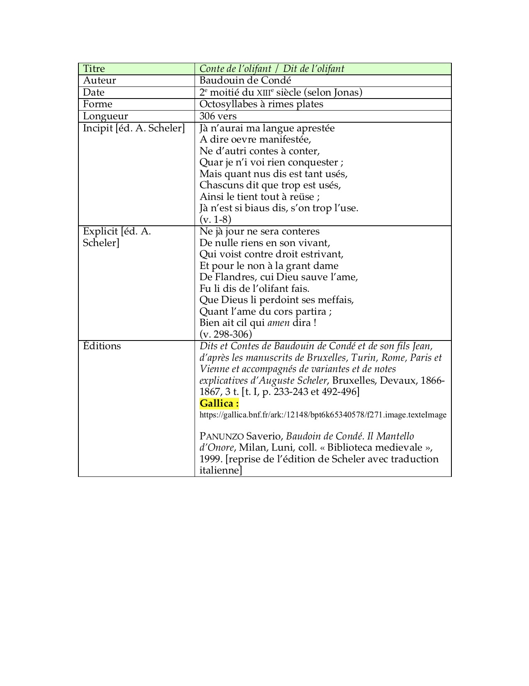

@@include('./fragments/header.html')
Baudouin de Condé, Conte de l’olifant
Manuscrits
Édition numérisée, accessible en ligne
Dits et Contes de Baudouin de Condé et de son fils Jean, d’après les manuscrits de Bruxelles, Turin, Rome, Paris et Vienne et accompagnés de variantes et de notes explicatives, éd. Auguste Scheler, Bruxelles, Devaux, 1866-1867, 3 t. [t. I, p. 233-243 et 492-496]
Éléments de description
